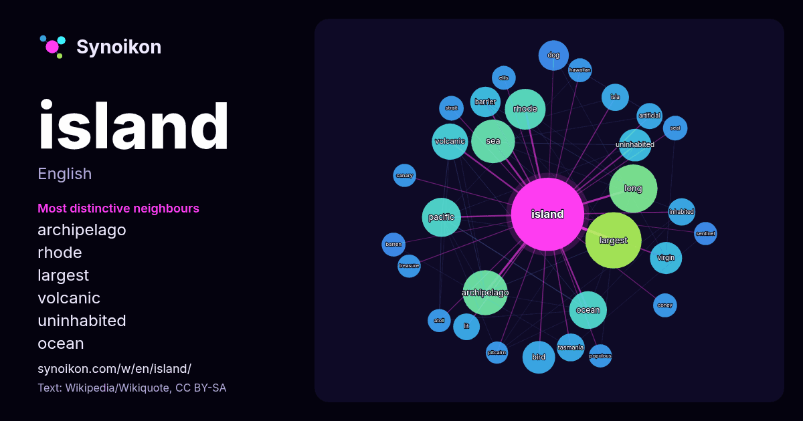

English · word of the day list
island
The words found around it in 2503 instances from Wikipedia, Wikiquote, Hacker News.

Most distinctive neighbours
- archipelago 53×
- rhode 37×
- largest 33×
- volcanic 33×
- uninhabited 30×
- ocean 25×
- barrier 24×
- virgin 23×
- pacific 22×
- isla 21×
- tasmania 21×
- sea 19×
- inhabited 19×
- lit 19×
- dog 17×
- coney 17×
- barren 17×
- artificial 16×
- bird 16×
- strait 16×
× = how many times more often than in general Wikipedia text.
Most frequent neighbours
- largest 89
- south 84
- located 79
- long 66
- group 62
- archipelago 57
- sea 54
- states 54
- rhode 47
- small 46
- pacific 43
- north 42
- lake 40
- ocean 40
- world 40
- country 38
- film 37
- volcanic 37
- australia 36
- city 35
In context
- An island (/ˈaɪ.lənd/ EYE-lənd) or isle is a piece of land, distinct from a continent, completely surrounded by water. There are continental islands, which Wikipedia snippets · Island
- The Island (also known as Newgate Tower, and previously ISLAND and IYLO) is a residential skyscraper in the London Borough of Croydon, London. In 2018 Wikipedia snippets · The Island, Croydon
- Forgotten Island is a 2026 American animated fantasy comedy film written and directed by Joel Crawford and Januel Mercado. Produced by DreamWorks Animation Wikipedia snippets · Forgotten Island
- south via Rhode Island Sound and Block Island Sound; and shares a small maritime border with New York, east of Long Island. Rhode Island is the smallest Wikipedia snippets · Rhode Island
- Intentional islanding is often performed as a defence in depth to mitigate a cascading blackout. If one island collapses, it will not take neighboring islands with Wikipedia snippets · Islanding
- Easter Island (Spanish: Isla de Pascua, [ˈisla ðe ˈpaskwa]; Rapa Nui: Rapa Nui, [ˈɾapa ˈnu.i]) is an island and special territory of Chile in the southeastern Wikipedia snippets · Easter Island
- Monkey Island is a series of adventure games. The first four games were produced and published by LucasArts, earlier known as Lucasfilm Games. The fifth Wikipedia snippets · Monkey Island
- Treasure Island is an adventure and historical novel by Scottish novelist Robert Louis Stevenson. It was published as a book in 1883, but is set in the Wikipedia snippets · Treasure Island
More words
- art
- autumn
- bell
- bread
- bridge
- cat
- city
- climate
- clock
- death
- desert
- dog
- family
- food
- forest
- garden
- god
- gold
- health
- heart
- history
- honey
- horse
- language
- life
- map
- mirror
- money
- mother
- mountain
- nature
- power
- rain
- road
- salt
- science
- shadow
- silence
- song
- star
- storm
- summer
- tea
- time
- train
- truth
- water
- winter
- work
Precomputed on 2026-10-09 with default settings (±5 words, medium corpus). The interactive map can refresh it with live data.